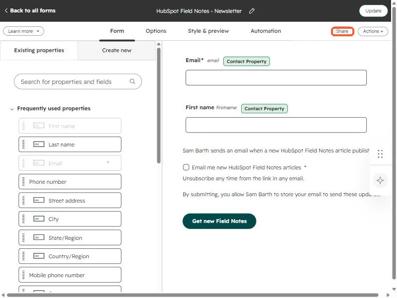
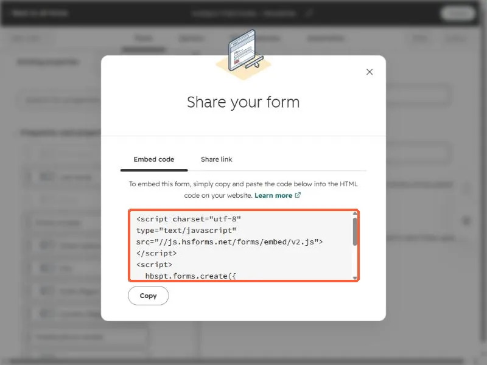
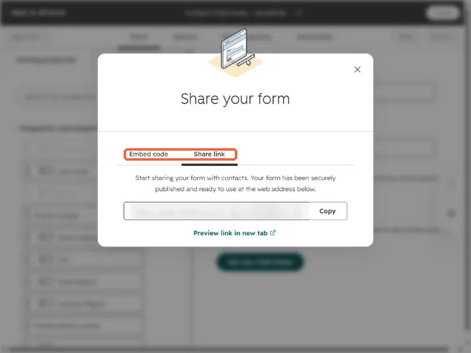
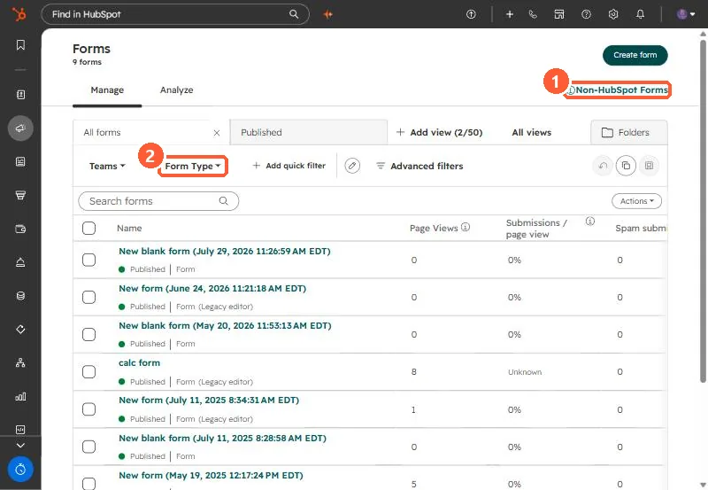

Short answer
To put a HubSpot form on another site, copy the embed code from the form's Share dialog, register the site's domain, and install the tracking code. In React, call hbspt.forms.create after the component mounts, with a target. To send your own form's data to HubSpot, POST to the forms submission API with the form's GUID, a fields array and a context with hutk and pageUri. I tested it on November 15, 2026: the API answers 200 even when it drops your data. Unknown fields are ignored, and a submission whose page URL was on an unregistered domain never became a contact.
1. Embed a HubSpot form on another site
Open the form and click Share:


The Embed code tab has the snippet. In some editor versions the path is Review and update, Update, Get embed code.


<div id="hs-form"></div>
<script charset="utf-8" src="//js.hsforms.net/forms/embed/v2.js"></script>
<script>
hbspt.forms.create({ region: "na1", portalId: "YOUR_PORTAL_ID", formId: "YOUR_FORM_ID", target: "#hs-form" });
</script>- Use the exact code from your own dialog; it carries your region.
- Paste it into an HTML or custom code block, not a rich text area.
- Without
target, the form is injected right after the script. Use a separate target per form, andformInstanceIdif the same form appears twice on a page. - React: run the create call after the component mounts, so the target element exists.
- Load forms only from HubSpot's hosted script. Self-hosted copies miss HubSpot's security, spam and accessibility updates.
Two things make it work: register the domain under Additional site domains, or submissions are flagged as spam (see forms and spam), and install the tracking code on the page so form analytics work (see the tracking code).
No code at all? The Share link tab gives a standalone HubSpot-hosted form page (link blurred here):


Style the form in the editor's styling panel. Developer CSS overrides need Marketing Hub or Content Hub Professional or Enterprise and can break when HubSpot updates the form.
2. Find the form GUID
The form GUID identifies the form in the API. In the updated editor it is the data-form-id (or formId) value in the embed code; it also appears in the editor's page URL. Store GUIDs with your integration settings so forms do not get mixed up.
3. Submit data with the forms API
POST https://api.hsforms.com/submissions/v3/integration/submit/{portalId}/{formGuid}
{
"fields": [
{ "objectTypeId": "0-1", "name": "email", "value": "visitor@example.com" },
{ "objectTypeId": "0-1", "name": "firstname", "value": "Pat" }
],
"context": {
"hutk": "VALUE_OF_HUBSPOTUTK_COOKIE",
"pageUri": "https://www.example.com/contact",
"pageName": "Contact us"
}
}Why a form submission instead of creating a contact through the CRM API: it triggers form-based workflows and segments, applies the form's blocked domains and consent settings, and the hutk (the visitor's hubspotutk cookie) links earlier anonymous page views to the new contact. There is also a secure endpoint (/integration/secure/submit/) that takes an app token.
4. What the API really does with bad data (tested)
I sent test submissions to an email-only form in my developer test portal:
| Submission | Response | What happened |
|---|---|---|
Valid email, pageUri on example.com (not a registered domain) | 200 "Thanks for submitting the form." | No contact created and no entry in the form's submissions |
| Valid email plus an unknown field name, no context | 200 | Contact created; unknown field silently ignored |
| Email value "not-an-email" | 200 | No contact created |
Invalid hutk | 400 INVALID_HUTK | Rejected |
| Form with required ticket fields, sent without them | 400 REQUIRED_FIELD, naming TICKET.subject and TICKET.content | Rejected |
So a 200 only means HubSpot accepted the request. The first case matches HubSpot's rule that submissions from unregistered domains are treated as spam. Always send a real pageUri on a registered domain, check property names against the form, and confirm a test submission actually created the contact. The contact that was created had Original Traffic Source Direct traffic, since there was no hutk to tie it to a visit. I deleted the test contact afterwards.
5. Read submissions
GET https://api.hubapi.com/form-integrations/v1/submissions/forms/{formGuid}That returned my test submissions with their field values. For a one-off pull, exporting from the forms list is simpler:


6. Non-HubSpot forms
If the tracking code is on the page and the non-HubSpot forms setting is on, HubSpot scans pages for supported forms and collects submissions, creating or updating contacts by email. A collected form appears in the forms list after its first submission (filter Form Type to non-HubSpot forms).
- HubSpot captures on the submit click, so a failed validation and a retry can give one partial and one complete submission.
- Some form builders are not supported; use the submission API for those.
- To replace one with a real HubSpot form: Actions, Copy to HubSpot, edit, publish and embed it.
7. What is changing for 2027
- Legacy forms docs. HubSpot's developer docs now label the old embed reference as legacy forms. New forms use the updated editor's embed code, so copy it fresh rather than reusing old snippets.
- Spam rules apply to the API too. Registered domains and blocked email domains affect API submissions, so add each new site to Additional site domains before going live.
- Dated API versions. The CRM APIs used around forms (contacts, search) move to date-based versions; the v4 and 2025-09 versions lose support in March 2027. See API versioning.
Common questions
The API returned 200 but no contact appeared.
Check the pageUri domain is registered, the email is valid, and look in the form's spam list. A 200 does not guarantee a contact.
Why does my embedded form not show in React?
The create call ran before the target element existed. Call it after mount, with a target.
Where do I find the form ID?
In the embed code (formId or data-form-id) or the form editor's URL.
Why does my form's source say Direct traffic?
The submission had no hutk, so HubSpot could not tie it to the visitor's earlier page views.
Sources
- HubSpot Knowledge Base: Style and embed HubSpot forms on an external site
- HubSpot Knowledge Base: Find your form GUID
- HubSpot Knowledge Base: Manage spam form submissions
- HubSpot Knowledge Base: Use non-HubSpot forms
- HubSpot Knowledge Base: Convert non-HubSpot forms into HubSpot forms
- HubSpot developer docs: Legacy forms
- HubSpot developer docs: Submit data to a form
- HubSpot developer docs: Get submissions for a form